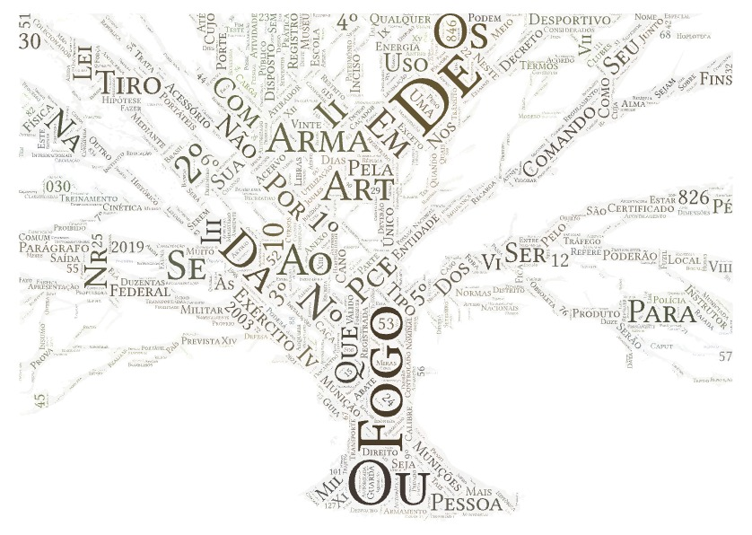
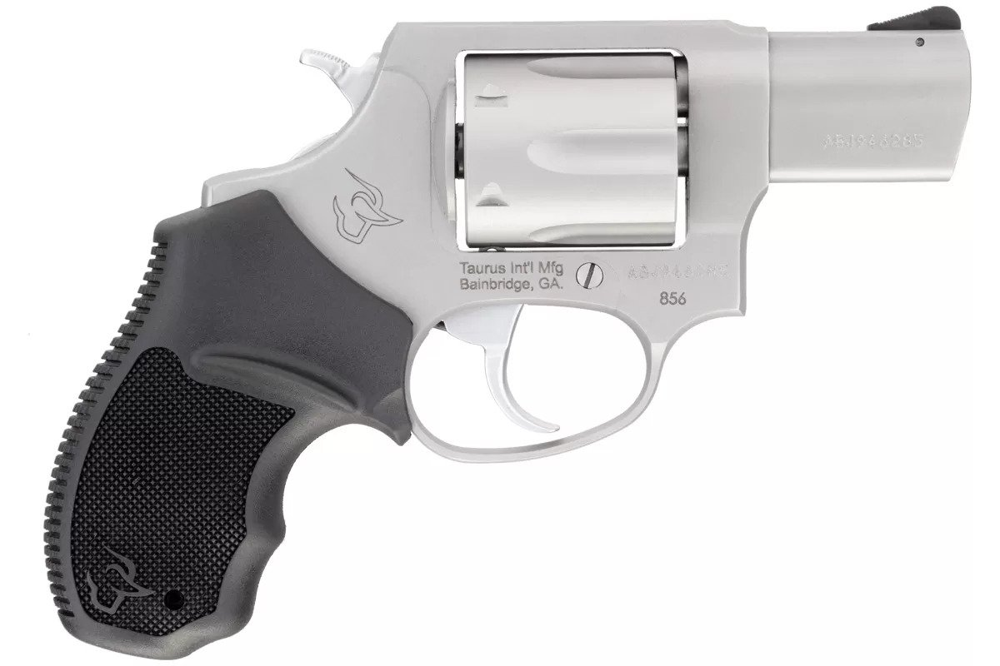
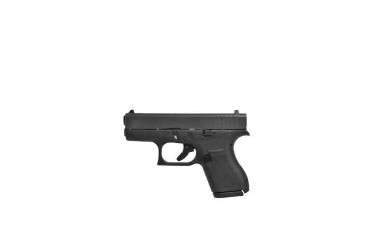
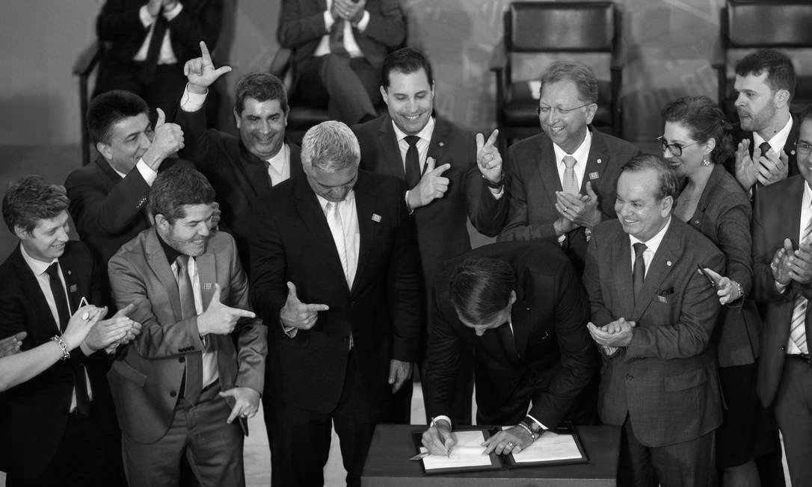
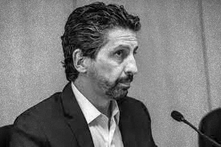
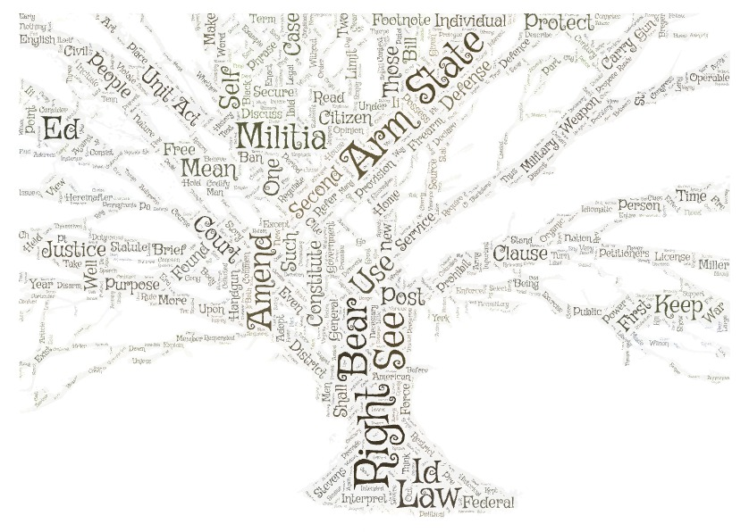
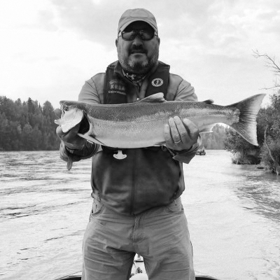
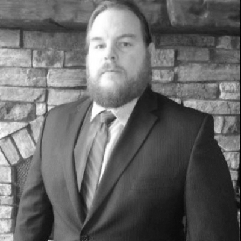
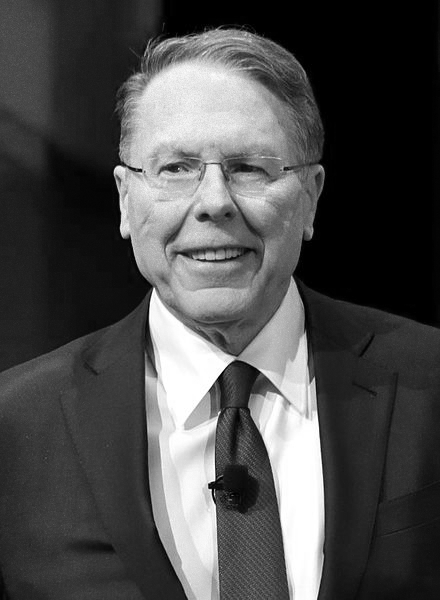
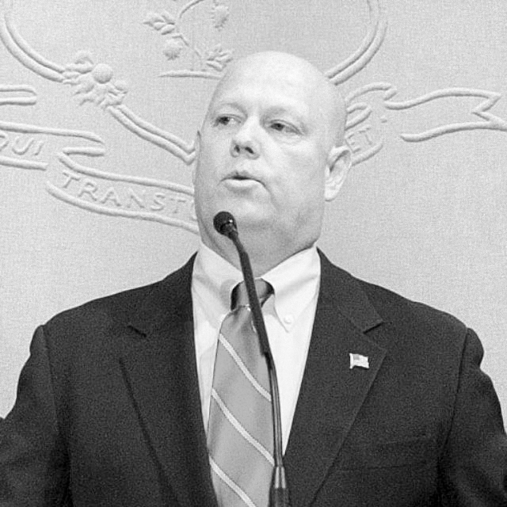

Cara às Arma
The collection of executive orders has served to create the current changes to the longstanding gun violence crisis in Brazil.

Based on a combination of the most popular caliber and the most popular brand in Brazil.
Based on a combination of the most popular caliber and the most popular brand in Brazil.

Click me for a 3D model of what could be the most popular gun in the United States.
These three guns are most likely the most popular in the United States.
Click me for a 3D model of what could be the most popular gun in the United States.
These three guns are most likely the most popular in the United States.
Brazil
"Bolsonaro assina decreto que flexibiliza aquisição e uso de armas e munições." - O Globo
Brazil has been a pivotal part of my journey into Latin American research. As a child, learning
about the Amazon River dolphin sparked my interest, despite my fondness for bottlenose dolphins.
This led me to delve into international research, starting with these fascinating freshwater
creatures. Though I'm Colombian, Brazil has always been my gateway to understanding Latin America, a
fact that often surprises others.
My understanding of Colombia, however, is clouded by sensational news from Caracol International,
family anecdotes, and my own experiences. In contrast, I view Brazil through an academic lens, which
also shapes my perception of Latin American politics. Studying figures like Bolsonaro, I'm not
surprised by the similarities I see with political figures like Donald Trump, considering their
shared approach to governance.
As a Catholic Christian, I find myself deeply troubled by the hypocrisy and heresy in some
evangelical movements globally. The irony of their stance against 'indoctrination' and 'sex
education', while simultaneously practicing their form of religious indoctrination, is stark. This
includes early religious practices like infant baptism. Their rejection of sex education and control
over children's thoughts create a breeding ground for predators, perpetuating cycles of abuse in
ultra-religious communities.
In Brazil, a complex web of corruption has emerged, which could be seen as a 'coinfection' of
societal ills, exploiting the Brazilian populace. This includes police and military officers
dominating the very favelas they were meant to protect. Bolsonaro's government, influenced by the
BBB lobbies, has created an environment where organized crime thrives. The relaxation of
environmental laws has allowed drug traffickers to expand their operations with minimal resistance,
and the influx of firearms has further empowered these criminal elements.
Meanwhile, in the United States, some advocates of the Second Amendment cite low murder rates,
overlooking the underreporting of crimes and the expansion of criminal syndicates into areas like
the Amazon. The police control over favelas only adds to this complex tapestry of unreported
violence and crime.
Brazil's organized crime story starts with Bicheiros, who committed the first environmental crimes on a large scale. Organized contiinues to be an important part of Brazil's sociopolitics. Favelas that are held hostage by corrupt police or other criminal organizations generate votes for the candidate that is most favorable to the hostage takers.
Brazil's criminal syndicates are not the only groups that provide substantial sociopolitical support for Bolsonaro's right wing regime. Evangelists who saw Bolsonaro's biggotted policies as a protection from the "woke mind virus" as we say in the US (secular critique of their harmful ideologies).

Bolsonaro needed more than just sociopolitical support to win he needed cold hard cash and foreign gun companoes and their lobbiest were more than happy to cough up money for their favorite president.
Bolsonaro needed more than just sociopolitical support to win he needed cold hard cash and foreign gun companoes and their lobbiest were more than happy to cough up money for their favorite president.
US
Once militias were no longer tied to the right to bear arms gun fanatics could go crazy and buy all the guns they wanted to. (For personal use or to sell in backroom deals to individuals in organized crime that are not allowed to buy these guns).
Content Warning: guns, gun violence, weaponized incompetence, suicidal ideation(barely, but it's
there).
I have never thought, “This is so frustrating. I should go suck-start an S&W M&P 9 Shield M2.0.”
Researching gun violence in America is so infuriating that you may use the expression. “Are you
fucking kidding? I want to shoot myself.” To describe the unique frustration researchers face when
they look at a governmental database and find that only a corrupt bureaucracy can create a
particular kind of weaponized incompetence.
With any illicit economy, there are already inconsistencies on a global level between guns that are
used illicitly and the records that are kept. But the puppets manipulated by the gun lobby that are
Uncle Sam have decided that the one organization solely responsible for federal firearms record
keeping must keep through records that include the guns sold in all the closed gun shops in this
nation. But they must not be searchable at all. The information on every firearm sold at a
closed-down shop in the United States is stored chronologically, where each shop is individually
indexed.
This is obviously of concern to most people because it wastes the American people's and their civil
servants' time and money. However, considering this impact on the reports that the ATF can publish,
it is especially concerning. At the end of the year, the ATF compiles statewide reports that are a
2nd Amendment, lusting conservative’s dream and focusing on the crime and cities that were
associated with firearm recovery. This is the perfect ammunition for these moral entrepreneurs to
protect their corporate sponsors when someone wants to talk about how many S&W M&P 9 Shield M2.0 is
sold daily, 30 at a time to a junky who is very clearly going to give their newly minted gun
collection to whatever criminal underling gave them enough money for exactly 30 S&W M&P 9 Shield
M2.0s and an FBI background check. Instead, they can talk about how the majority of guns recovered
in NY were from NYC. It’s honestly too bad that the most significant “category” is “Possession of
Weapon” and not organized crime like it is. Thankfully, the data from the ATF is valuable enough
that every year, the state can point fingers at the source of where external guns are recovered and
reported to the ATF. And I can make a map out of this relationship.
What this means is that when I want to create artwork targeting the most prominent gun manufacturers
in the United States and Brazil, I cannot follow the scientific method I have created for giving
each lobbyist their gun. Allow me to explain my madness. I went into this project with a particular
delusion that my understanding of research surrounding illicit economies and the deep-seated control
corporations have on the US, which predicted exactly my current predicament, could be wrong. Once I
started researching, I would magically find data in my efforts to visualize.
Gun companies to watch out for
These are the lobbiest for SIG Sauer.

Ed Pagano is a lawyer for the Akin, Gump et al law firm that lobbies for SIG.
Ryan Thompson is another lawyer for the Akin, Gump et al. These two positions rotate.

"Vice President Government Affairs at SIG SAUER, Inc." according to his LinkedIn.
These are the lobbiest for Smith and Wesson.
Michael E Williams works for the MW Capitol Strategies firm that lobbies for S&W.

Joseph Corrigan is a lawyer at Steptoe & Johnson. This position rotates.
These are the lobbiest for Taurus.

Michael Herson is the president of the firm American Defense International that lobbies for Taurus in the US.
These are the lobbiest for ghost guns.

Mark Barnes is the president of the firm Mark Barnes & Assoc that lobbies for Polymer80 the most prominent.

In lieu here is the founder of Polymer80, on of the most popular ghost gun manufacturering kits, Loran Kelley.
These are the lobbying groups that have contributed $20M since 2020 to politicians in favor of guns.

Erich Pratt is the president of Gun Owners of America.

Erich Pratt is the president of the National Rifle Association.

Lawrence Keane is a Vice President at National Shooting Sports Foundation.
Admittedly, my skills in Photoshop could be better. I just made the images black and white, but I
hope my presentation can make up for it. Understanding Bryce's art creation process is critical to
emulating it effectively. In the art world, particularly in illegal markets, restorers sometimes
turn into forgers, or vice versa, developing their styles so distinctively that their work gains
independent value. While I'm not forging Fernando Bryce's work, I am drawing heavy inspiration from
his style to highlight the issues he addressed through his art.
My approach is grounded in a belief that innovation sometimes requires starting from scratch. This
is encapsulated in two philosophies. The first originates from the open-source community, with an
unwritten rule to contribute to existing projects rather than always starting anew. Projects may
diverge when ideological differences arise, but the foundational principle remains collaboration.
The second philosophy is learning by doing. As I emulate Bryce's style, I'm also embracing the
essence of his work. Bryce wasn't just an artist but a journalist whose art sensationalized issues,
demanding a deeper engagement with the complexities he depicted from viewers.
In my work, I've sought to adhere to Bryce's spirit, experimenting with various styles to achieve my
desired outcome. Initially, I merged Bryce's original pieces with relevant faces from my research,
striving to maintain the black-and-white aesthetic he often employed. This method aligns with how
Bryce brought attention to overlooked historical events, like in his 'Archive Studies series on
World War I. He brought faces to the names in old newspapers, a technique I've tried to replicate.
Johanna Calle is another influence in my work, known for her focus on legislation impacting
displaced rural communities. She symbolically used trees in her art, representing new beginnings
against the backdrop of historical land sale records. These records not only signify historic
ownership but also the forced sales during armed conflicts. This historical coercion resonates in my
project, especially in contexts like the favelas under Bolsonaro's regime, where police coercion is
rampant.
In my piece 'Cara às balas', the tree symbolizes the state's corruption and the potential for new
growth if the corruption is eradicated. This duality captures the essence of Bryce and Calle's
works, blending historical context with contemporary implications.